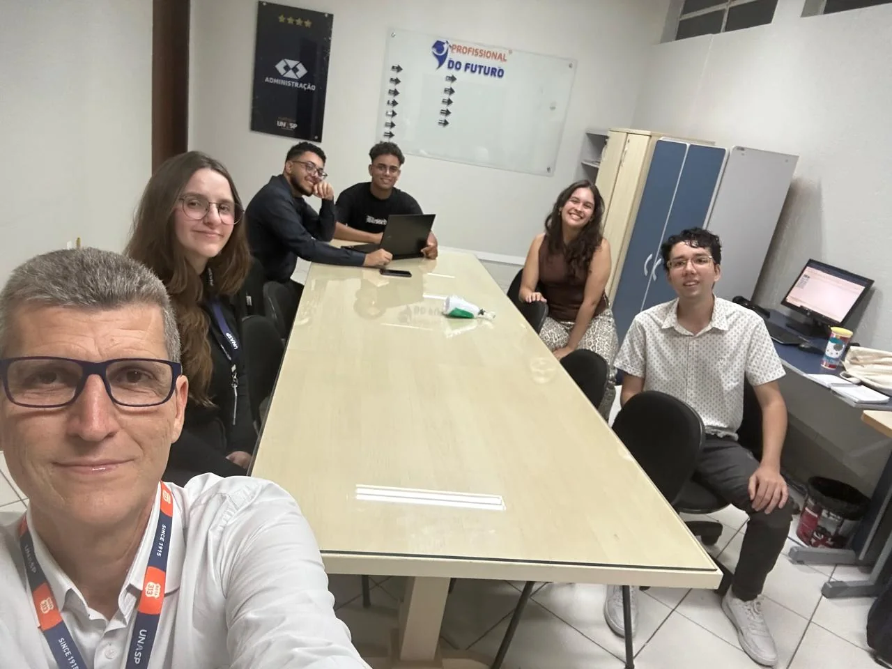
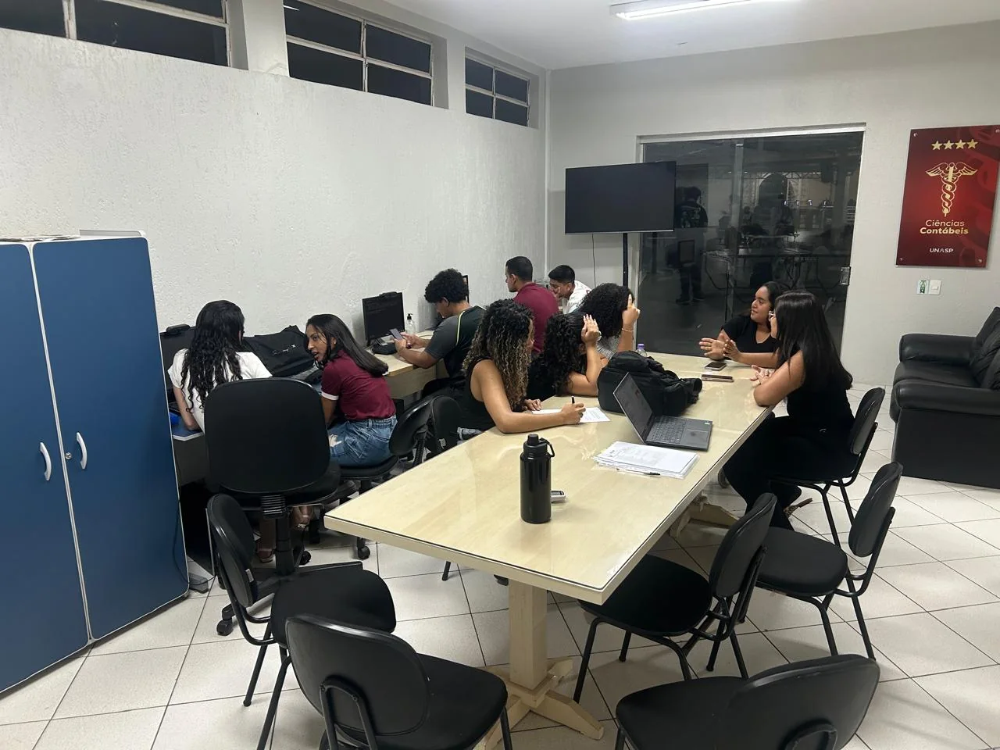
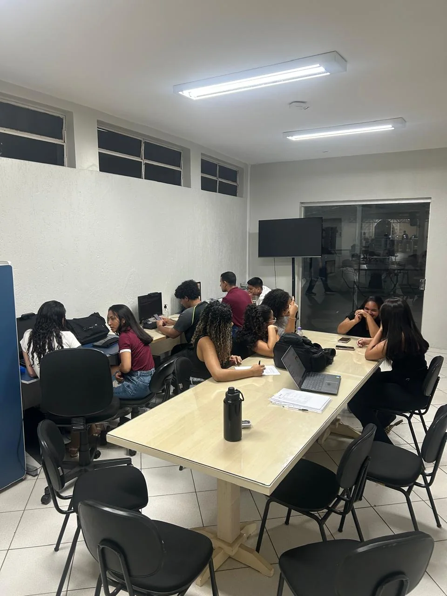
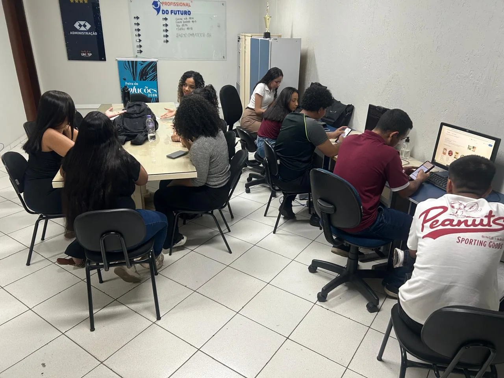

Ideias em conjunto
Discussões e trocas de experiências ajudam a transformar desafios em caminhos possíveis.
A UNASP Empresa Júnior é um espaço de aprendizado na prática, colaboração e desenvolvimento profissional. É aqui que ideias são discutidas, projetos ganham forma e o conhecimento acadêmico se aproxima das necessidades do mercado.

O trabalho acontece de forma colaborativa, com espaço para aprender, compartilhar experiências e desenvolver soluções com responsabilidade.
Discussões e trocas de experiências ajudam a transformar desafios em caminhos possíveis.
O ambiente aproxima o aprendizado acadêmico de situações reais de gestão e consultoria.
Cada atividade contribui para desenvolver organização, comunicação e visão profissional.
Registros do ambiente da Empresa Júnior durante momentos de trabalho, colaboração e desenvolvimento de atividades.



Entre em contato para saber mais sobre nossos serviços, atendimento e como podemos ajudar você ou o seu negócio.